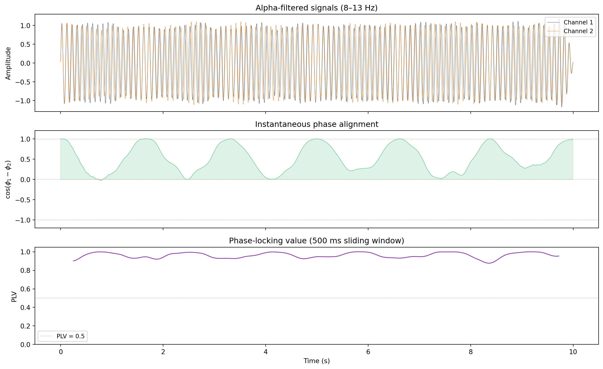

Phase-locking value (PLV), the cosine of phase difference, building the instantaneous connectivity matrix, interpreting positive and negative values, and sliding-window approaches.
Published
31 March 2026
Modified
31 March 2026
Why this topic matters
The Hilbert transform gives you the instantaneous phase of each EEG channel. But phase at a single channel, on its own, does not tell you much about how brain regions communicate. What matters is the relationship between phases at different channels. Are two regions oscillating together? Are they systematically out of step? And does this relationship hold steady or keep changing?
Phase alignment measures answer these questions. They turn raw phase values into connectivity matrices that describe the pattern of coordination across the entire scalp at each moment in time. These matrices are the input to metastability analysis and other network-level measures of brain dynamics.
Phase-locking value (PLV)
The phase-locking value (PLV; Lachaux et al., 1999) is the most widely used phase-based connectivity measure. It quantifies how consistent the phase difference between two signals is over a time window.
For two channels \(i\) and \(j\) with instantaneous phases \(\phi_i(t)\) and \(\phi_j(t)\), the PLV is:
The complex exponential \(e^{i\Delta\phi}\) represents the phase difference as a unit vector on the complex plane. If the phase difference is constant over time, all these vectors point in the same direction, and their average has magnitude close to 1. If the phase difference varies randomly, the vectors point in different directions and their average cancels out towards 0.
PLV ranges from 0 (no phase locking; phase difference is random) to 1 (perfect phase locking; phase difference is constant). In real EEG data, PLV values between 0.2 and 0.5 typically indicate meaningful synchronisation.
Limitations of PLV
PLV is computed over a time window, so it summarises the average synchronisation within that window. It does not tell you what is happening at individual time points. If synchronisation changes within the window (e.g., the first half is synchronised and the second half is not), PLV reports a moderate value that masks the dynamics.
PLV is also sensitive to volume conduction: nearby electrodes record overlapping signals from the same cortical sources, which inflates PLV artificially. This is a general problem for all phase-based measures at the sensor level.
The cosine of phase difference
An alternative to PLV that operates at individual time points is the cosine of the phase difference:
This gives an instantaneous measure of phase alignment between channels \(i\) and \(j\) at time \(t\). Its values range from \(-1\) to \(+1\):
\(c_{ij}(t) = 1\): channels are perfectly in phase (peaks coincide).
\(c_{ij}(t) = -1\): channels are perfectly in anti-phase (one peaks while the other troughs).
\(c_{ij}(t) = 0\): channels are a quarter-cycle apart (orthogonal).
The cosine measure has a useful property: it is symmetric (\(c_{ij} = c_{ji}\)) and it varies smoothly as the phase difference changes. Unlike PLV, it does not require averaging over a time window. You get a value at every single time point.
The trade-off is that the cosine measure is noisier than PLV, precisely because it does not average over time. A single time point of \(c_{ij}(t) = 0.9\) does not mean much on its own; it could just be a moment when two independent oscillations happened to line up. The power of this measure comes from looking at how the entire matrix of \(c_{ij}(t)\) values evolves over time.
Building the instantaneous connectivity matrix
At each time point \(t\), you can compute \(c_{ij}(t) = \cos(\phi_i(t) - \phi_j(t))\) for every pair of channels. This produces an \(N \times N\) matrix:
This is very efficient to compute. For \(N\) channels you only need to compute the pairwise phase differences and take their cosine.
Interpreting positive and negative values
The sign of \(A_{ij}(t)\) tells you the type of phase relationship:
Positive values (\(A_{ij} > 0\)): channels \(i\) and \(j\) are within a quarter-cycle of each other. The closer to \(+1\), the more tightly synchronised they are. In neuroscience terms, these regions are likely part of the same functional network at that moment.
Negative values (\(A_{ij} < 0\)): channels \(i\) and \(j\) are more than a quarter-cycle apart, with \(-1\) meaning exact anti-phase. Anti-phase relationships are not “bad” or “disconnected”. They can reflect legitimate neural coordination. For example, two regions might be in a reciprocal inhibitory relationship, where one is active while the other is suppressed.
Values near zero: channels are roughly a quarter-cycle apart. This is sometimes interpreted as a “transitional” relationship, neither clearly in-phase nor anti-phase.
The dominant eigenvector of \(\mathbf{A}(t)\) captures the primary partition: channels with the same sign in the eigenvector tend to be in phase with each other, while channels with opposite signs tend to be in anti-phase. This partition defines the “coordination pattern” at time \(t\).
Sliding-window vs instantaneous approaches
There are two strategies for using phase alignment:
Instantaneous (time-point-by-time-point)
Compute \(\mathbf{A}(t)\) at every time point (or at regular intervals, e.g., every 10 ms). Extract the dominant eigenvector at each time point. Compute metastability as the temporal variance of the eigenvector elements.
This is the approach used in the metastability pipeline (Hancock et al., 2025). It provides maximum temporal resolution: you can track changes in coordination on a millisecond timescale.
Sliding window
Compute PLV (or average \(\mathbf{A}(t)\)) within a moving time window (e.g., 500 ms wide, sliding by 50 ms). This smooths out the moment-to-moment noise and gives more stable connectivity estimates, at the cost of temporal resolution.
Sliding-window PLV is more appropriate when you want to track slower changes in connectivity (e.g., over seconds) or when you need a connectivity measure that is robust to noise.
For the metastability analysis in Natalia’s project, the instantaneous approach is preferred because metastability is specifically about the variability of coordination over time. Averaging within a window would smooth out some of that variability.
Working example
The code below simulates two channels with a known phase relationship, computes the connectivity matrix over time, and visualises how the phase alignment changes.
import numpy as npimport matplotlib.pyplot as pltfrom scipy.signal import hilbert, butter, filtfiltrng = np.random.default_rng(42)# ── Simulation parameters ──────────────────────────────────────sfreq =256duration =10n_samples = sfreq * durationtimes = np.arange(n_samples) / sfreqfreq =10.0# Hz (alpha)# ── Create two channels with a time-varying phase relationship ─# Channel 1: stable 10 Hz oscillation with slight driftphase_drift_1 =0.2* np.cumsum(rng.standard_normal(n_samples) / sfreq)signal_1 = np.sin(2* np.pi * freq * times + phase_drift_1)signal_1 +=0.3* rng.standard_normal(n_samples) # add noise# Channel 2: same frequency, but with an extra slow phase offset# that makes the channels go in and out of alignmentslow_offset =1.5* np.sin(2* np.pi *0.3* times) # 0.3 Hz modulationphase_drift_2 =0.2* np.cumsum(rng.standard_normal(n_samples) / sfreq)signal_2 = np.sin(2* np.pi * freq * times + phase_drift_2 + slow_offset)signal_2 +=0.3* rng.standard_normal(n_samples)# ── Band-pass filter to alpha band ────────────────────────────b, a = butter(4, [8, 13], btype="band", fs=sfreq)filtered_1 = filtfilt(b, a, signal_1)filtered_2 = filtfilt(b, a, signal_2)# ── Hilbert transform: extract phase ─────────────────────────phase_1 = np.angle(hilbert(filtered_1))phase_2 = np.angle(hilbert(filtered_2))# ── Compute instantaneous phase alignment ─────────────────────# cosine of phase difference (the A_ij(t) matrix element for 2 channels)cos_diff = np.cos(phase_1 - phase_2)# ── Compute sliding-window PLV for comparison ────────────────window_samples =int(0.5* sfreq) # 500 ms windowplv_times = []plv_values = []for start inrange(0, n_samples - window_samples, int(0.05* sfreq)): end = start + window_samples phase_diff_window = phase_1[start:end] - phase_2[start:end] plv = np.abs(np.mean(np.exp(1j* phase_diff_window))) plv_times.append(times[start + window_samples //2]) plv_values.append(plv)# ── Build the full 2x2 connectivity matrix at one time point ──t_example =int(2.5* sfreq) # at t = 2.5 secondsphi = np.array([phase_1[t_example], phase_2[t_example]])phase_diff_matrix = phi[:, None] - phi[None, :]A_example = np.cos(phase_diff_matrix)print("Phase alignment matrix at t = 2.5 s:")print(f" A = [[{A_example[0,0]:+.3f}, {A_example[0,1]:+.3f}],")print(f" [{A_example[1,0]:+.3f}, {A_example[1,1]:+.3f}]]")print(f" Phase difference: {np.degrees(phase_1[t_example] - phase_2[t_example]):.1f} degrees")# ── Visualisation ─────────────────────────────────────────────fig, axes = plt.subplots(3, 1, figsize=(13, 8), sharex=True)# Panel 1: Filtered signalsax = axes[0]ax.plot(times, filtered_1, linewidth=0.5, color="#2c3e50", label="Channel 1", alpha=0.8)ax.plot(times, filtered_2, linewidth=0.5, color="#e67e22", label="Channel 2", alpha=0.8)ax.set_ylabel("Amplitude")ax.set_title("Alpha-filtered signals (8\u201313 Hz)")ax.legend(fontsize=9, loc="upper right")# Panel 2: Instantaneous phase alignment (cosine of phase difference)ax = axes[1]ax.plot(times, cos_diff, linewidth=0.5, color="#27ae60", alpha=0.7)ax.axhline(0, color="grey", linewidth=0.5, linestyle=":")ax.axhline(1, color="grey", linewidth=0.5, linestyle=":")ax.axhline(-1, color="grey", linewidth=0.5, linestyle=":")ax.fill_between(times, cos_diff, 0, where=(cos_diff >0), color="#27ae60", alpha=0.15)ax.fill_between(times, cos_diff, 0, where=(cos_diff <0), color="#e74c3c", alpha=0.15)ax.set_ylabel(r"$\cos(\phi_1 - \phi_2)$")ax.set_title("Instantaneous phase alignment")ax.set_ylim(-1.2, 1.2)# Panel 3: Sliding-window PLVax = axes[2]ax.plot(plv_times, plv_values, linewidth=1.2, color="#8e44ad")ax.set_ylabel("PLV")ax.set_xlabel("Time (s)")ax.set_title("Phase-locking value (500 ms sliding window)")ax.set_ylim(0, 1.05)ax.axhline(0.5, color="grey", linewidth=0.5, linestyle=":", label="PLV = 0.5")ax.legend(fontsize=9)plt.tight_layout()plt.show()
Phase alignment matrix at t = 2.5 s:
A = [[+1.000, +0.003],
[+0.003, +1.000]]
Phase difference: 89.9 degrees

Phase alignment between two simulated EEG channels. The two channels start in phase, drift apart, and then re-align, illustrating how the cosine measure tracks changes in instantaneous connectivity.
The top panel shows the two alpha-filtered signals. You can see periods where they oscillate together (peaks aligned) and periods where they drift apart.
The middle panel shows the instantaneous phase alignment, \(\cos(\phi_1 - \phi_2)\). When it is near \(+1\) (green shading), the channels are in phase. When it is near \(-1\) (red shading), they are in anti-phase. The slow modulation reflects the 0.3 Hz phase offset we built into the simulation: the channels cycle between being aligned and being out of alignment roughly every 3 seconds.
The bottom panel shows the sliding-window PLV, which is always positive (because PLV measures the consistency of the phase difference, not its sign). It is high when the phase difference is stable (either in-phase or anti-phase) and low when the phase relationship is changing rapidly.
Key takeaways
PLV measures how consistent the phase difference between two channels is over a time window. It ranges from 0 (random) to 1 (perfectly locked) and is the most widely used phase connectivity measure.
The cosine of the phase difference, \(\cos(\phi_i - \phi_j)\), gives an instantaneous measure of alignment at each time point. It ranges from \(-1\) (anti-phase) to \(+1\) (in-phase).
The instantaneous connectivity matrix\(A_{ij}(t) = \cos(\phi_i(t) - \phi_j(t))\) captures the full pattern of pairwise phase relationships across all channels at each moment. It is symmetric, with ones on the diagonal.
Positive values mean the channels are within a quarter-cycle of each other; negative values mean they are more than a quarter-cycle apart. Both can reflect real neural coordination.
For metastability analysis, the instantaneous approach (computing \(\mathbf{A}(t)\) at every time point) is preferred over sliding-window PLV, because metastability is about temporal variability in coordination patterns.
All phase-based connectivity measures at the sensor level are affected by volume conduction, which inflates apparent connectivity between nearby electrodes. Source-space analysis or the imaginary part of coherence can mitigate this, but they add complexity.